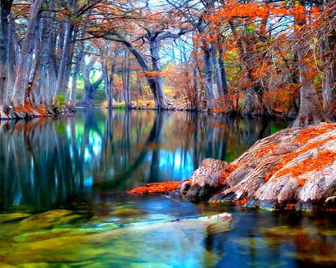

Programa Favorito
Mi programa favorito son los que tienen que ver con documentales tantos de informacion cientifica, como de la naturaleza, medio ambiente, etc.
Mi programa favorito son los que tienen que ver con documentales tantos de informacion cientifica, como de la naturaleza, medio ambiente, etc.
Dependiendo el tipo de documental asi puede haber muchos presentadores asi que no hay un personaje específico.
El tipo de programa es documental.